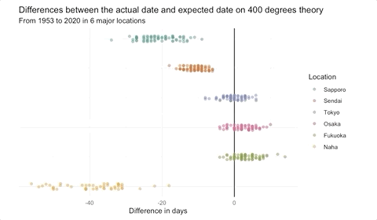

Hi, I'm Yuriko.
I'm a journalism graduate student based in Boston, MA. I'm from Osaka Japan, and I previously worked for a Japanese national newspaper as a staff writer. Now, I'm focusing on interactive data visualization for the web.
I'm a journalism graduate student based in Boston, MA. I'm from Osaka Japan, and I previously worked for a Japanese national newspaper as a staff writer. Now, I'm focusing on interactive data visualization for the web.

My teammates and I completed this multimedia project, which tells various stories of young people surrounding dating apps during the COVID-19 pandemic.
The page was designed to give familiarity with dating apps, featuring touch swiping (with the help of a library Swiper.js) and relatability voting (user input data are stored at a database offered by Firebase).
Audio autoplay (desktop version only) gives deeper insights of interviewees' feelings. Additional page allows users to explore more data about survey results the team conducted for this project, in a scrollytelling format (using a library enter-view.js).
What I did: four out of seven of the featured interviews (Cameron Hager, Emma Hoey, Asha, and Thao Tran), design, and development.

Demonstrations in downtown Boston on May 31, 2020 turned into violent clashes between protesters and police. I tracked key moments between protesters and police that night using body camera footage revealed by a news and commentary website about the justice system, The Appeal.
I developed based on a scrollytelling template offered by a custom online mapping tool, Mapbox, which uses a JavaScript library scrollama.js.

There are some theories about cherry blossoms first-blooming date in Japan. One is 400-degree theory (the first- blooming happens when the cumulative daily average temperature since February 1st reaches 400 degrees Celsius), and another is 600-degree theory (first-blooming occurs when the cumulative daily high temperature since February 1st reaches 600 degrees Celsius).
I conducted a statistical analysis to test if those theories hold true in all 58 observation locations in Japan, based on cherry blossom’s first-blooming date and daily temperature data from 1953 to 2020.
This project is ongoing. The completed version of this analysis will be uploaded in early May 2021.

I analyzed Japanese Sumo wrestling's tournament ranking table to see what kind of wrestlers are at the top of the rankings. I first analyzed the data with R, and created an interactive scatter plot with D3 JavaScript.

This is a multimedia project that aimed to unpack lives of people with dementia and their family caregivers during the coronavirus pandemic. I interviewed two in-home caregivers around the Boston area. Their stories are told via text, pictures, audio files, and videos.

Link to this article (Japanese)
At The Asahi Shimbun, a Japanese national newspaper, my team and I broke the first arrest of a for-profit child adoption case in Japan. I was able to have a one-on-one interview with the suspect before the arrest, adding a deeper insight to the story with an exclusive Q&A.
This story received the paper’s nationwide award for Leading Local News Director.

Link to this article (Japanese)
At The Asahi Shimbun, a Japanese national newspaper, I covered a murder case where an elderly man had strangled his wife who had been suffering from dementia.
After half a year of investigating the murder, I was able to release a comprehensive story which gained a lot of attention from the Japanese public and heightened awareness around the challenges families face when dealing with dementia.
This story achieved the third best reader conversion rate in Chiba prefecture.